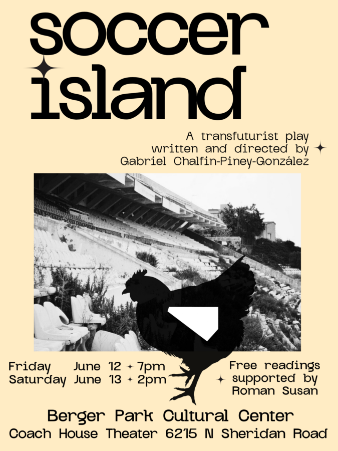

soccer island
soccer island
Berger Park Cultural Center Theater
6215 N Sheridan Road, Chicago IL
Readings
Friday, June 12 at 7 PM
Saturday, June 13 at 2 PM
Written and Directed by Gabriel Chalfin-Piney-González
Performed by Amari Amai, Fionn Casper-Strauss, Rosé Hernandez, and Zachary Nicol
Two young people are on a soccer field, held up by a pole in the middle, one of those humid late summer afternoons. The platform of the field appears to balance, like a golf ball on a tee. The pole travels down about a hundred feet below the field before getting lost in the ocean and travels up about ten or so feet through the middle of the field, like a newly planted tree. There are no landmarks around, the field balances alone in the ocean. At times, the platform seems motionless, floating, other times it teeters back and forth guided by the breeze, always managing to come back to center. There are a few prominent holes in the field. The holes have been patched up with the netting from the soccer goals. A chicken bounces on the netting, high above the ocean.
The reading runs 40 minutes with no intermission. The play is written for an adult audience and includes scenes of drug abuse. Please email with access questions.
Gabriel Chalfin-Piney-González is a craft-centered artist from Poughkeepsie, NY.World building, oral and ecological histories, prison dismantling futurism, self taught artistic practices and multi-sensorial reciprocal performance centers much of their artistic practice. Chalfin-Piney-González has shown work at Patient Info (2026), Evoke Gallery (2025), Design Museum of Chicago (2024), Heaven Gallery (2024), WeatherProof (2024), apexart (2024), Arts of Life/Circle Contemporary (2024), Comfort Station (2023), Tiny Table Gallery (2023), Bird Show (2023), Speedwell Projects (2022), Buoy Gallery (2022), Chicago Artists Coalition, (2021, 2020), Terrain Exhibitions (2020), High Concept Labs (2019), The Kleinert James Center for the Arts (2017), The Samuel Dorsky Museum of Art (2017); and featured on WBEZ, ArtNews, New City Magazine, Spaces Archive, The Chicago Sun Times, The Chicago Reader, Hey Alma, Jewish Telegraphic Agency, and The Chicago Humanities Festival.
These events are being shared as part of Movement Studies – a programming series investigating social and environmental transitions. This project is partially supported by grants from the Illinois Arts Council Agency; Gaylord and Dorothy Donnelley Foundation; Reva and David Logan Foundation; Teiger Foundation; and through in-kind support from Chicago Park District.